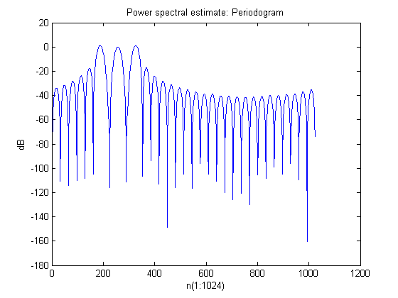
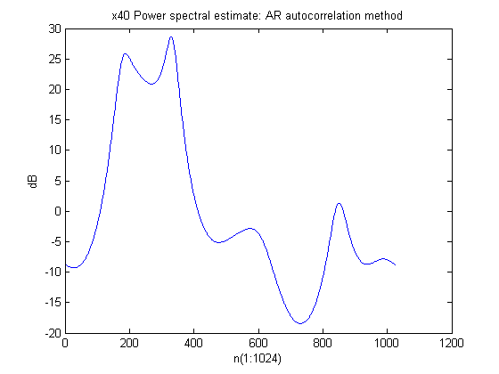
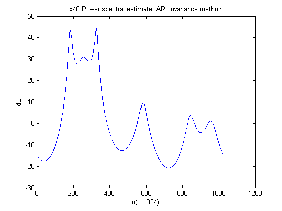
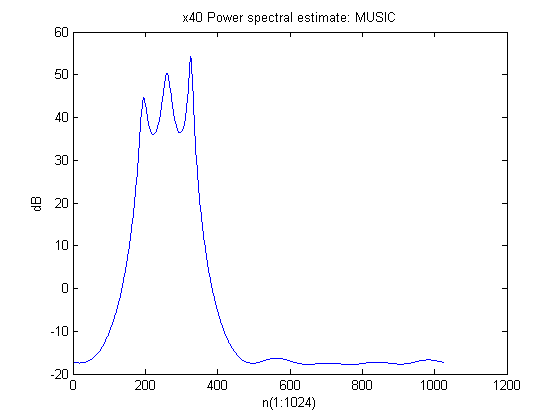
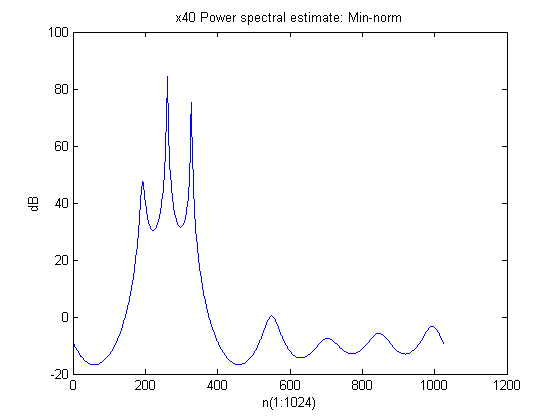
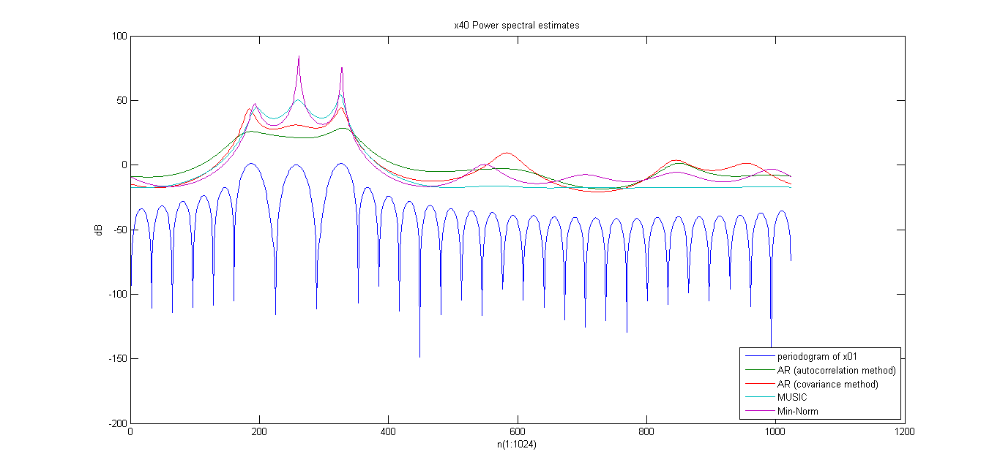

EE779 Computing Assignment 2 Q2 (K40)
Ashwin Kachhara, 10d070048
Contents
Reading data R01, I01 from the DAT files.
r40 = getdata('q2_data/R40.DAT'); i40 = getdata('q2_data/I40.DAT');
Merging real and imaginary parts to generate a complex number
x40 = r40 + i40*1i;
a) Periodogram of K01
r01 = getdata('q2_data/R01.DAT'); i01 = getdata('q2_data/I01.DAT'); x01 = r01 + i01*1i; N = 1024; temp = abs(fft(x01, N)).^2; per_x = temp/N; figure(1) plot(20*log10(per_x)) title('Power spectral estimate: Periodogram') ylabel('dB') xlabel('n(1:1024)')
b)i) AR model using autocorrelation method
First lets calculate the y and Y matrices (REF: slides, Stoica). After that, simply varying value for N1, N2 will give us the required matrix for the linear prediction model using autocorrelation and covariance method.
p=7; y1 = [zeros(p,1);x40';zeros(p,1)]; N = 32; Y1 = zeros(N, p); for i=1:N+p, for j=1:p, Y1(i, j) = y1(p+i-j); end end
For the Autocorrelation method: N1=1, N2 = N+p
N1=1; N2 = N+p; ya = y1(N1+p:N2+p); Ya = Y1(N1:N2,:);
Calculating the optimal value of the AR coefficients
theta_a = -inv(Ya'*Ya)*Ya'*ya; Pspec_a=zeros(1024, 1); for k=0:1024, w = k/1024 * 2 * pi; expo = [1; exp(-1i*w); exp(-2i*w); exp(-3i*w); exp(-4i*w); exp(-5i*w); exp(-6i*w); exp(-7i*w)]; Pspec_a(k+1) = 1/abs(expo'*[1;theta_a])^2; end figure(2) plot(20*log10(Pspec_a)) title('x40 Power spectral estimate: AR autocorrelation method') ylabel('dB') xlabel('n(1:1024)')
b)ii) AR model using covariance method
For the Covariance method: N1=p+1, N2=N
N1=p+1; N2=N; yc = y1(N1+p:N2+p); Yc = Y1(N1:N2,:);
Calculating the optimal value of the AR coefficients
theta_c = -inv(Yc'*Yc)*Yc'*yc; Pspec_c=zeros(1024, 1); for k=0:1024, w = k/1024 * 2 * pi; expo = [1; exp(-1i*w); exp(-2i*w); exp(-3i*w); exp(-4i*w); exp(-5i*w); exp(-6i*w); exp(-7i*w)]; Pspec_c(k+1) = 1/abs(expo'*[1;theta_c])^2; end figure(3) plot(20*log10(Pspec_c)) title('x40 Power spectral estimate: AR covariance method') ylabel('dB') xlabel('n(1:1024)')
b)iii) MUSIC method
We will use the 8x8 autocorrelation matrix for this method. We will calculate it using the covariance method.
pm = 8; y1m = [zeros(pm,1);x40';zeros(pm,1)]; N = 32; Y1m = zeros(N, pm); for i=1:N+pm, for j=1:pm, Y1m(i, j) = y1m(pm+i-j); end end N1=pm+1; N2=N; Ycm = Y1m(N1:N2,:);
The required 8x8 matrix is Ycm'*Ycm. We use the eig function to calculate the eigenvalues and corresponding eigenvectors of the matrix.
[V D] = eig(Ycm'*Ycm); Vn = V(:,1:5); Pspec_mu=zeros(1024, 1);
Out of these, the 5 noise space eigenvectors are the ones we require. We will average the product e* . v over all the eigenvectors in noise subspace Vn and obtain the pseudospectrum in Pspec_mu
for k=0:1024, w = k/1024 * 2 * pi; expo = [1; exp(1i*w); exp(2i*w); exp(3i*w); exp(4i*w); exp(5i*w); exp(6i*w); exp(7i*w)]; Pspec_mu(k+1) = 1/sum(abs(expo'*conj(Vn)).^2); end figure(4) plot(20*log10(Pspec_mu)) title('x40 Power spectral estimate: MUSIC') ylabel('dB') xlabel('n(1:1024)')
b)iv) Min-norm method
As per the formula, the vector a having the min norm is computed. This vector alone is used to compute the Power spectrum. Idea is that by computing the optimal vector 'a', we can reduce the computational load that would be otherwise required in methods like MUSIC
u1 = [1 0 0 0 0 0 0 0]'; denom = u1'*(Vn)*(Vn)'*u1; a = (Vn)*(Vn)'*u1; a = a/denom; Pspec_min = zeros(1024,1); for k=0:1024, w = k/1024 * 2 * pi; expo = [1; exp(1i*w); exp(2i*w); exp(3i*w); exp(4i*w); exp(5i*w); exp(6i*w); exp(7i*w)]; Pspec_min(k+1) = 1/abs(expo'*conj(a)).^2; end figure(5) plot(20*log10(Pspec_min)) title('x40 Power spectral estimate: Min-norm') ylabel('dB') xlabel('n(1:1024)')
figure(6)
plot((1:1:1024), [20*log10(per_x(1:1024)') 20*log10(Pspec_a(1:1024)) 20*log10(Pspec_c(1:1024)) 20*log10(Pspec_mu(1:1024)) 20*log10(Pspec_min(1:1024))])
legend({'periodogram of x01', 'AR (autocorrelation method)', 'AR (covariance method)', 'MUSIC', 'Min-Norm'}, 'Location', 'SouthEast')
title('x40 Power spectral estimates')
ylabel('dB')
xlabel('n(1:1024)')
 Comparison of Power spectrum estimates
The periodogram has many peaks due to the rectangular windowing. The three largest peaks are almost at the same place as theoretical expected value.
The AR autocorrelation method is only able to show 2 very small wideband peaks. It is highly inaccurate and also peaks are not prominent
The AR covariance method: As the error magnitude increases, the accuracy of the estimate decreases. Middle peak is barely visible now
The MUSIC method also gives 3 narrowband peaks at the same place as the previous method. These are the only 3 peaks. The averaging that is performed in MUSIC, eradicates the spurious peaks. The peaks become more wideband as the noise amplitude increases.
Min-norm method also gives 3 narrowband peaks at the same place as the previous method. We calculated the optimal vector in noise subspace, and that helped us reduce computational burden, but there are some spurious peaks. Their value, however is less than that in AR covariance method and generally not that prominent. The peaks become more wideband as the noise amplitude increases.